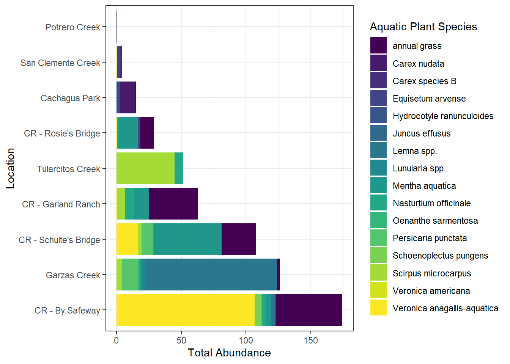

library(tidyverse)
library(janitor)
library(vegan)
library(mosaic)
library(car)Final Project: Part 1
Data Description
- Identify your data source.
My honors capstone data will be used for this project, that I have collected from the spring of 2025 until the end of fall 2025.
- Describe your data, including variables and data types.
The dataset has 279 rows and 28 variables, 11 character variables, 15 double variables, and 2 time variables.
Methods for Data Collection and variables collected:
Do a 50 m transect on both sides of the river, 1 meter out from shore, recorded plants every time seen, within 1 meters of each side of the tape (overall 4 meters recorded)
When a stream is less than or equal to 2 meters wide, I only surveyed one transect in the middle of the river, to cover the full two meters.
Every time plant is found measure:
Depth (m)
Velocity (m/s)
Substrate size (mm)
Plant name and number of individuals or range/cover area on the transect
Measure at each transect overall:
canopy cover facing north, south, east, and west, and averaged over all 4, then multiplied by 4 and divided by product of 17*4 (freshwater ecology standard)
the percentage of the 50-meter transects that are riffle, pool, run, or glide.
water temperature (°C)
pH
conductivity(ms/cm)
TDS (g/L)
Dissolved oxygen (mg/L) and Dissolved oxygen (%)
salinity
- Identify the research questions you want to answer.
- How does abundance and diversity differ between site and transect? (2) Are there different environmental conditions that support specific species? (3) Which environmental factors lead to higher diversity? (4) Where do taxa tend to occur when they are not ubiquitous or rare?
Data Visualization Plans
- What do you want your final visualizations to look like?
Violin plots with jittered points for abundance and diversity between locations and transects
dodged barchart showing average values of environmental variables with a fill of presence absence for important species to compare
dodged barchart showing changes in diversity or abundance across sites
possibly a table of values from eventual linear model output and random forest modelling output
- What do you want to highlight on your final visualizations in order to answer your research questions? How do you plan to do that?
Highlights:
highlight the species with the most abundance and the species with the lowest abundance
highlight the highest abundances between sites
highlight any close relationships between environmental factors and abundance or presence absence
My Plan:
ordering bars, violin plots, etc. from smallest to biggest (using the mean to do this task with violin plots)
use annotations or bright colors to highlight important notes
- What is missing from your data or would need to change in your data to create these visualizations?
Create a total abundance variable by combining the cover area and number of individuals variable
- an estimate of abundance would be 30 cm in width for each individual, so each individual was about 900 cm^2, so add this to the area counts
Create a presence/absence column for every species at every site
Join environmental variable columns to create separate datasets for presence/absence and abundance
For substrate sizes: change <2s to 1 (standard to use half of our limit number) and for numbers with a greater than symbol, use the lowest number, e.g.: change >300, to 300
For the velocity variable: change <0.1 to 0.05; drop nas
Treat NA depth as 0 depth
Add a new column of rooted and floating by combining the values of emergent and submergent into one value of rooted!
Join additional environmental data taken from the online EPA StreamCat Database:
NHDPlus California Data Vector Processing, Unit 18. (2024) [downloaded file]. United States Environmental Protection Agency. Available by: https://www.epa.gov/waterdata/nhdplus-california-data-vector-processing-unit-18
- I will be reducing this data set to closely follow the Carmel River Watershed region, I am researching, in ArcGIS.
Data Cleaning Plans
- Do you need to reformat any variables into different types (e.g. factors, time, dates, strings)? Or remove information from variable values?
Yes, I changed the substrate and velocity variables to remove “>” or “<” symbols so that they can be numeric variables. I did this with mutate().
- Do you need to deal with any missing data, especially missing data coded other than NA?
Yes, I removed NA data from the velocity variable and change NA values in the depth variable to zero. There is not any missing data that is not coded as NA. I did this with mutate().
- Do you need to filter your data? How?
No, I don’t need to do any filtering.
- Do you need to create any new variables? What variables? How?
using mutate()
a stem count variable called calc_stem_abundance_m2 by multiplying number of individuals by 0.09 (accounting for each individual as 900 cm^2 on average for an estimate)
a final_abundance variable by using cover area when the value for number_individuals is NA or individuals are greater than or equal to 150 (this may be a less accurate estimate of individuals so using cover area is a better estimate in this case). I also added a clause for using the cover area variable instead of individuals for annual grass if individuals are greater than 5 (as it is difficult to count individual blades of grass)
Add a new variable of rooted_v_floating by combining the values of emergent and submergent into one value of “rooted”
creating a presence/absence column for each species at each site with 1 indicating presence
- Do you need to add new data (join) to your data? What data? How?
Yes, I need to join additional environmental variables from the StreamCat dataset to my new abundance and presence/absence datasets. I will most likely use a left_join as I want to keep everything in the abundance and presence/absence datasets and only keep the data that matches from the StreamCat dataset. Greater understanding of how this will be accomplished will be known once I explore the StreamCat dataset further and determine exactly what needs to be done to join the datasets.
- Do you need pivot your data in any way? Why? How?
Yes, I needed to pivot_wider to create the initial presence/absence matrix and then pivot_longer to add the environmental variables to the new presence/absence dataset.
- Do you need to summarize any of the variables? Which ones? How?
Yes. I will be grouping my data by species, transect location and site. Then, I need to take the sum of the final_abundance, and calculate the mean for all my environmental variables, for each of the groupings.
- What other aspects of your data need to be “fixed” in order to make your data visualizations?
I also used the janitor package to clean my variable names and make it easier to fully clean my data.
- Are there any variables you can exclude from your data?
Yes, I excluded the variables: location_coordinates, date, observers, start_time, end_time, as they weren’t important for my analysis.
Data Cleaning and Data Visualization
macrophytes <- read_csv("data-raw/macrophytes_full.csv")
macrophytes <- janitor::clean_names(macrophytes)macrophytes |>
mutate(calc_stem_abundance_m2 = number_individuals*0.09) |> #may change 0.09 to a better number to accurately represent size of plants, 30 cm^2 or 0.09 m^2, seems right
mutate(final_abundance = case_when(is.na(number_individuals) ~ cover_area_m_2,
number_individuals >= 150 ~ cover_area_m_2,
str_detect(aquatic_plant_species, "annual grass") &
!is.na(cover_area_m_2) &
number_individuals > 5 ~ cover_area_m_2,
.default = calc_stem_abundance_m2
)
) |>
write_csv("data-raw/macrophytes_clean.csv")
# |>
# select(number_individuals, calc_stem_abundance_m2, cover_area_m_2, aquatic_plant_species, total_abundance)Additional Data Cleaning
macrophytes_abun <- read_csv("data-raw/macrophytes_clean.csv", col_select = -c(location_coordinates, date, observers, start_time, end_time)) |>
drop_na(velocity_m_s) |>
mutate(substrate_size_mm = as.numeric(case_when(
substrate_size_mm == "<2" ~ "1",
substrate_size_mm == ">300" ~ "300",
.default = substrate_size_mm
)),
velocity_m_s = as.numeric(case_when(
velocity_m_s == "<0.1" ~ "0.05",
.default = velocity_m_s
)),
depth_m = case_when(
depth_m == "NA" ~ 0,
.default = depth_m
),
rooted_v_floating = case_when(
emergent_submergent_or_floating == "emergent" ~ "rooted",
emergent_submergent_or_floating == "submergent" ~ "rooted",
emergent_submergent_or_floating == "partly emergent" ~ "rooted",
emergent_submergent_or_floating == "floating" ~ "floating"
))Creating Abundance Dataset
# deciding what metric to use, mean or median for averaging all my numbers for each species, location, and bank
summary(macrophytes_abun)
macrophytes_abun |>
count(substrate_size_mm)
macrophytes_abun |>
count(velocity_m_s)
macrophytes_abun |>
count(depth_m)
#creating total abundance for each species, bank, and site
macrophytes_abun |>
group_by(aquatic_plant_species, transect_location_rb_lb, location_name, rooted_v_floating, water_body, season) |>
summarise(Calc_total_abundance_m2 = sum(final_abundance),
canopy_cover_mean = mean(canopy_cover_0_to_1_ratio),
temperature_c_mean = mean(temperature_c),
p_h_mean = mean(p_h),
conductivity_mean = mean(conductivity_m_s_cm),
salinity_mean = mean(salinity),
tds_g_l_mean = mean(tds_g_l),
do_percent_mean = mean(do_percent),
do_mg_l_mean = mean(do_mg_l),
riffle_mean = mean(riffle),
pool_mean = mean(pool),
run_mean = mean(run),
glide_mean = mean(glide),
depth_m_mean = mean(depth_m),
substrate_size_mm_mean = mean(substrate_size_mm),
velocity_m_s_mean = mean(velocity_m_s),
.groups = 'drop') |>
write_csv("data-clean/macrophytes_corr.csv")Creating Presence/Absence Dataset
presence_absence_factors <- macrophytes_abun |>
group_by(location_name, transect_location_rb_lb, water_body, season) |>
summarise(canopy_cover_mean = mean(canopy_cover_0_to_1_ratio),
temperature_c_mean = mean(temperature_c),
p_h_mean = mean(p_h),
conductivity_mean = mean(conductivity_m_s_cm),
salinity_mean = mean(salinity),
tds_g_l_mean = mean(tds_g_l),
do_percent_mean = mean(do_percent),
do_mg_l_mean = mean(do_mg_l),
riffle_mean = mean(riffle),
pool_mean = mean(pool),
run_mean = mean(run),
glide_mean = mean(glide),
.groups = 'drop') |>
write_csv("factorsfor_presabs_only.csv")
presence_absence_matrix <- macrophytes_abun |>
select(location_name, transect_location_rb_lb, aquatic_plant_species) |> # Keep only unique occurrences
distinct() |>
mutate(Present = 1) |> # Add a column with value 1 for presence
pivot_wider(
id_cols = c(location_name, transect_location_rb_lb),
names_from = aquatic_plant_species,
values_from = Present,
values_fill = 0 # Automatically fills non-observed combinations with 0
) |>
pivot_longer(cols = -c(location_name, transect_location_rb_lb), names_to = "aquatic_plant_species", values_to = "presence_or_not") |>
write_csv("data-clean/presence_absence_only.csv")###Calculating Diversity Indices across Sites and Creating a Table
macrophytes_final <- read_csv("data-clean/macrophytes_corr.csv")
#between sites location only, not transect, transect has been included here
abundance_matrix <- macrophytes_final |>
select(location_name, aquatic_plant_species, Calc_total_abundance_m2) |>
group_by(aquatic_plant_species, location_name) |>
summarise(Calc_total_abundance_m2 = sum(Calc_total_abundance_m2)) |>
pivot_wider(names_from = aquatic_plant_species, values_from = Calc_total_abundance_m2, values_fill = 0) |>
column_to_rownames("location_name")
# 1. Shannon Index
shannon <- diversity(abundance_matrix, index = "shannon")
# 2. Simpson Index (Gini-Simpson: 1 - D)
simpson <- diversity(abundance_matrix, index = "simpson")
# 3. Species Richness (S)
richness <- specnumber(abundance_matrix)
# 4. Pielou's Evenness (J)
evenness <- shannon / log(richness)
diversity_indices_results <- data.frame(
Site = rownames(abundance_matrix),
Shannon = shannon,
Simpson = simpson,
Richness = richness,
Evenness = evenness
)
print(diversity_indices_results) Site Shannon Simpson
Cachagua Park Cachagua Park 0.7977849 0.4343648
SLP Water Monitoring Site SLP Water Monitoring Site 0.8556271 0.4886364
By Safeway Redo By Safeway Redo 1.0430886 0.5387567
Creek Walk Start Creek Walk Start 0.6365142 0.4444444
Rosie's Bridge Rosie's Bridge 1.1148414 0.6067439
Lower Garzas (SLP) Lower Garzas (SLP) 0.7670197 0.3368506
Garland Ranch Garland Ranch 1.1158249 0.5832957
Schulte's Bridge (redo) Schulte's Bridge (redo) 1.3136075 0.6724798
Tularcitos Tularcitos 0.3767702 0.2187500
Richness Evenness
Cachagua Park 4 0.5754801
SLP Water Monitoring Site 4 0.6172045
By Safeway Redo 8 0.5016196
Creek Walk Start 2 0.9182958
Rosie's Bridge 5 0.6926899
Lower Garzas (SLP) 8 0.3688585
Garland Ranch 5 0.6933010
Schulte's Bridge (redo) 6 0.7331383
Tularcitos 2 0.5435644#overall indices
# 1. Create a single 'Overall' row by summing species abundances
overall_abundances <- abundance_matrix %>%
summarise(across(everything(), sum))
# 2. Calculate indices for the Overall landscape
overall_results <- data.frame(
Site = "OVERALL",
Richness = specnumber(overall_abundances),
Shannon = diversity(overall_abundances, index = "shannon"),
Simpson = diversity(overall_abundances, index = "simpson"),
Evenness = diversity(overall_abundances) / log(specnumber(overall_abundances))
)
# 3. Combine with your individual site results
final_table <- diversity_indices_results %>% # 'diversity_indices_results' is the table from the previous step
bind_rows(overall_results)BarChart Showing change in total abundance across sites and species
macrophytes_final |>
select(location_name, aquatic_plant_species, Calc_total_abundance_m2) |>
ggplot(aes(x = Calc_total_abundance_m2, fill = aquatic_plant_species, y = fct_reorder(location_name, desc(Calc_total_abundance_m2), .fun = sum))) +
geom_col() + #makes the geometry of the plot bars
labs(
#creates the x and y axis labels
x = "Total Abundance",
y = "Location",
fill = "Aquatic Plant Species") +
theme_bw() + #This code got rid of the gray background
scale_fill_viridis_d() +
scale_y_discrete(labels = c("Tularcitos" = "Tularcitos Creek", "Schulte's Bridge (redo)" = "CR - Schulte's Bridge", "Garland Ranch" = "CR - Garland Ranch", "By Safeway Redo" = "CR - By Safeway", "CR - Cachagua Park", "Rosie's Bridge" = "CR - Rosie's Bridge", "Lower Garzas (SLP)" = "Garzas Creek", "SLP Water Monitoring Site" = "San Clemente Creek", "Creek Walk Start" = "Potrero Creek"))
ggsave("abundance_bar.png", height = 5, width = 8)